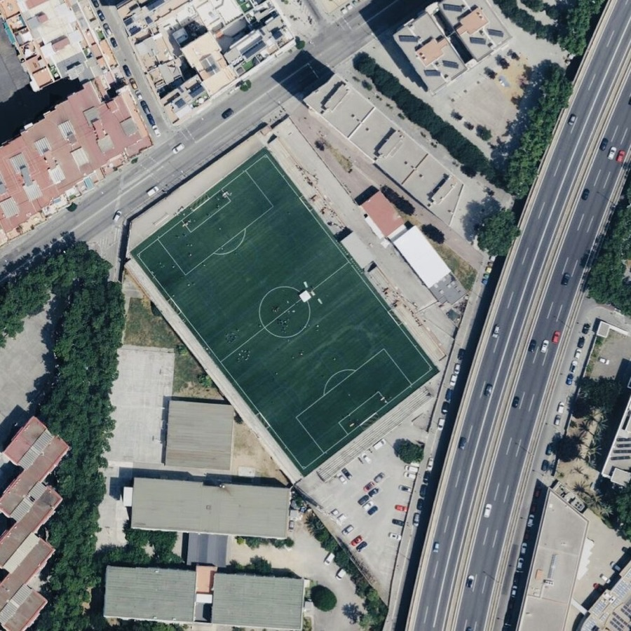
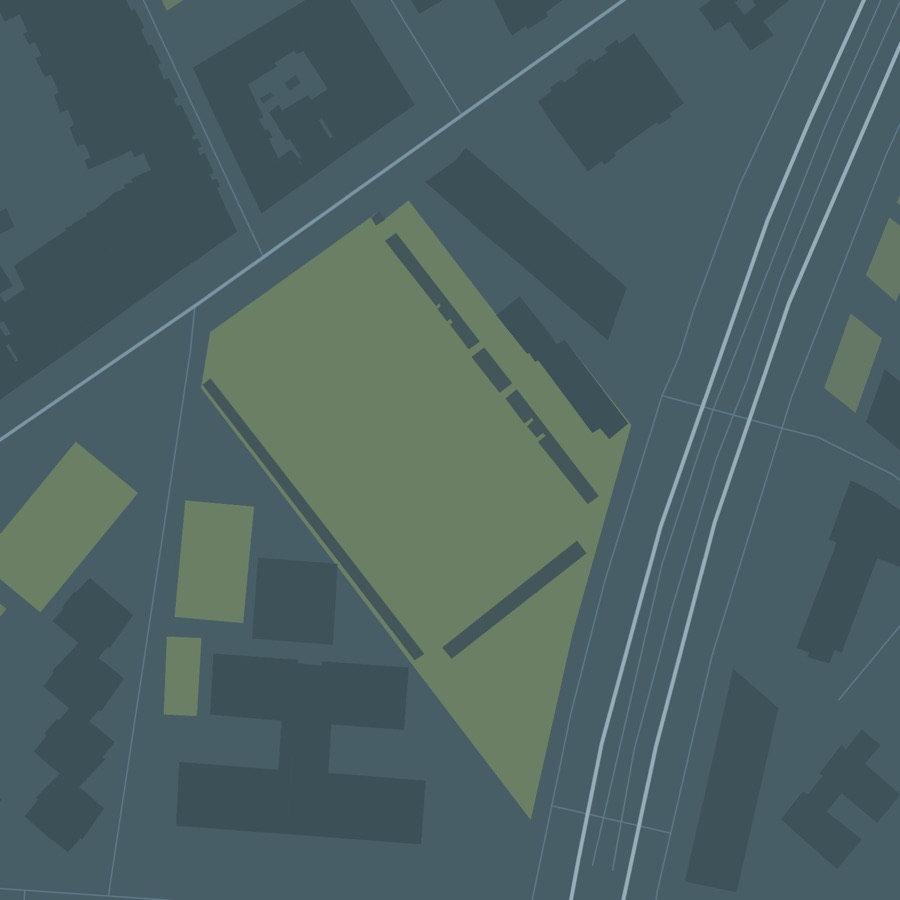
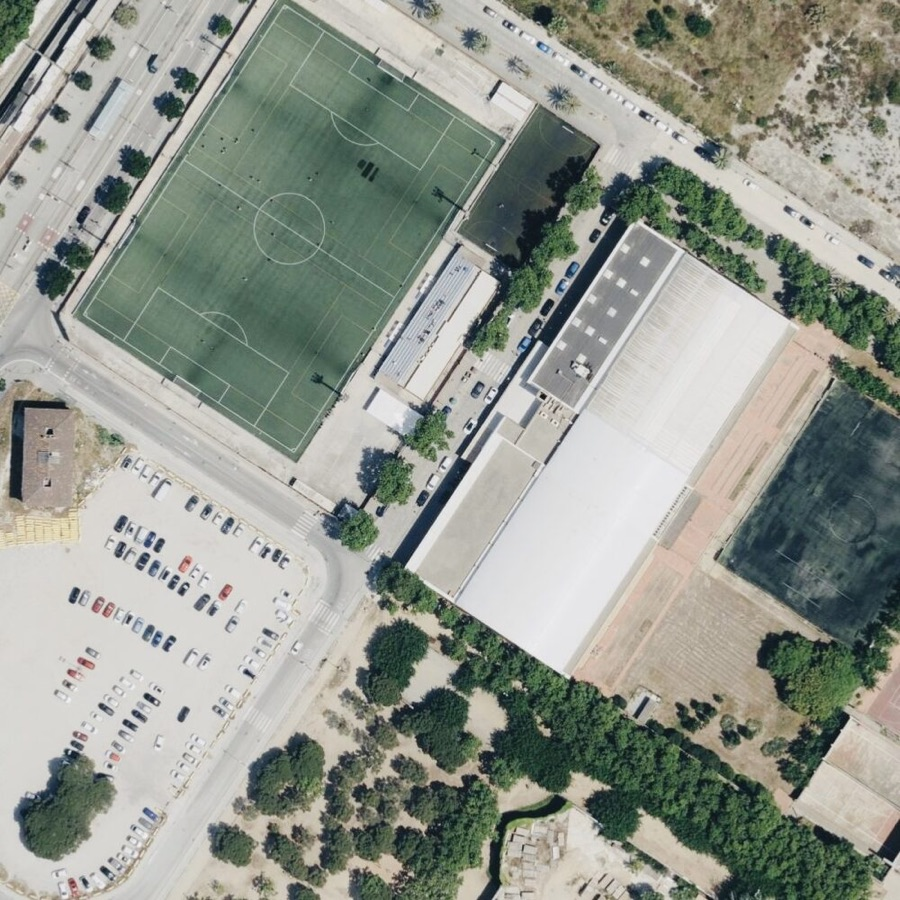
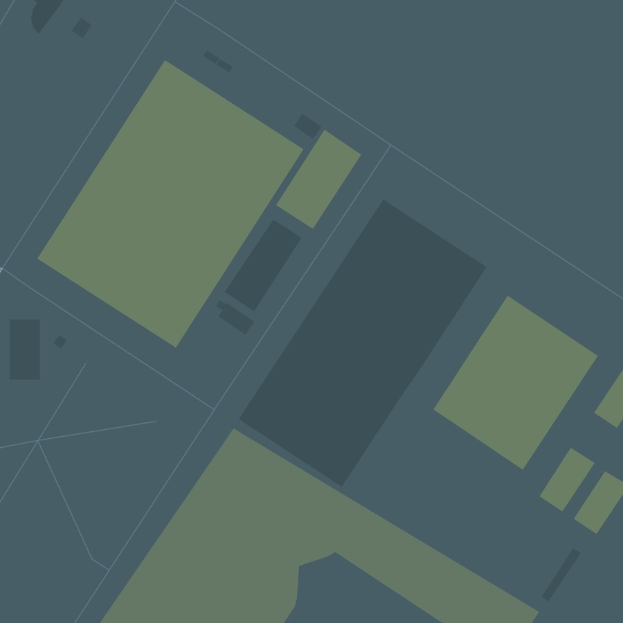
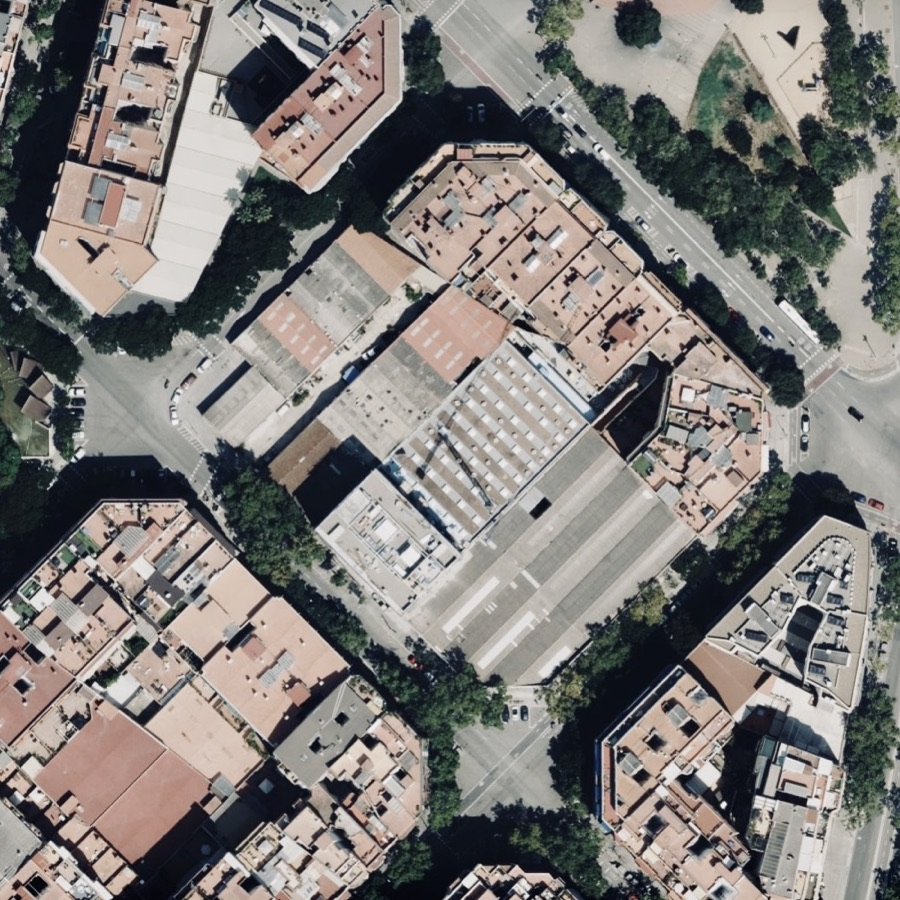
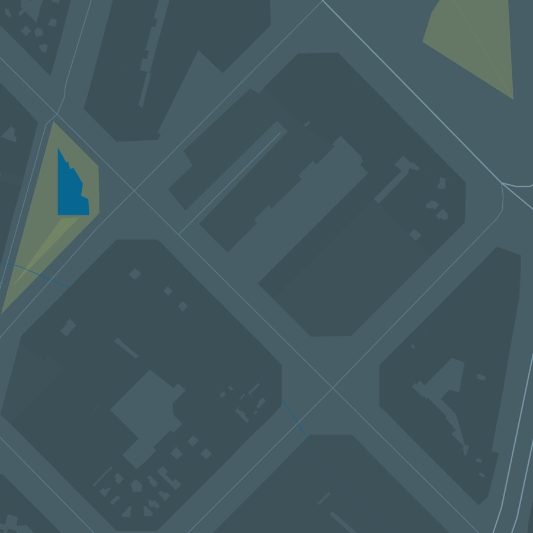
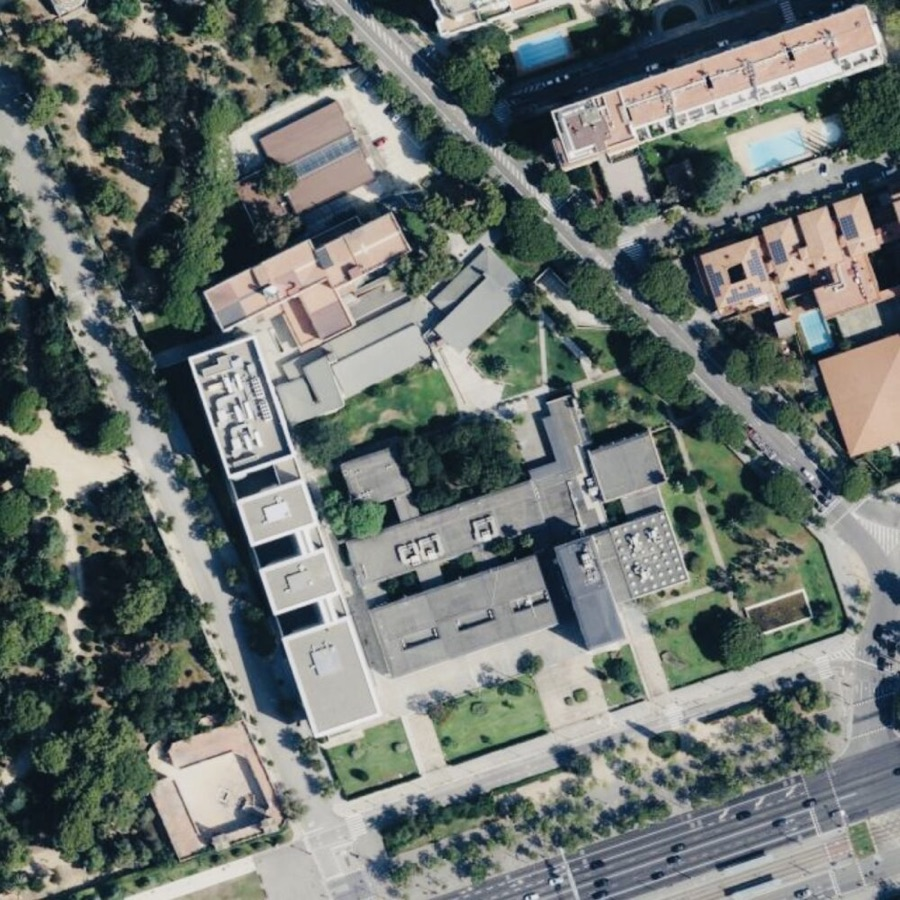
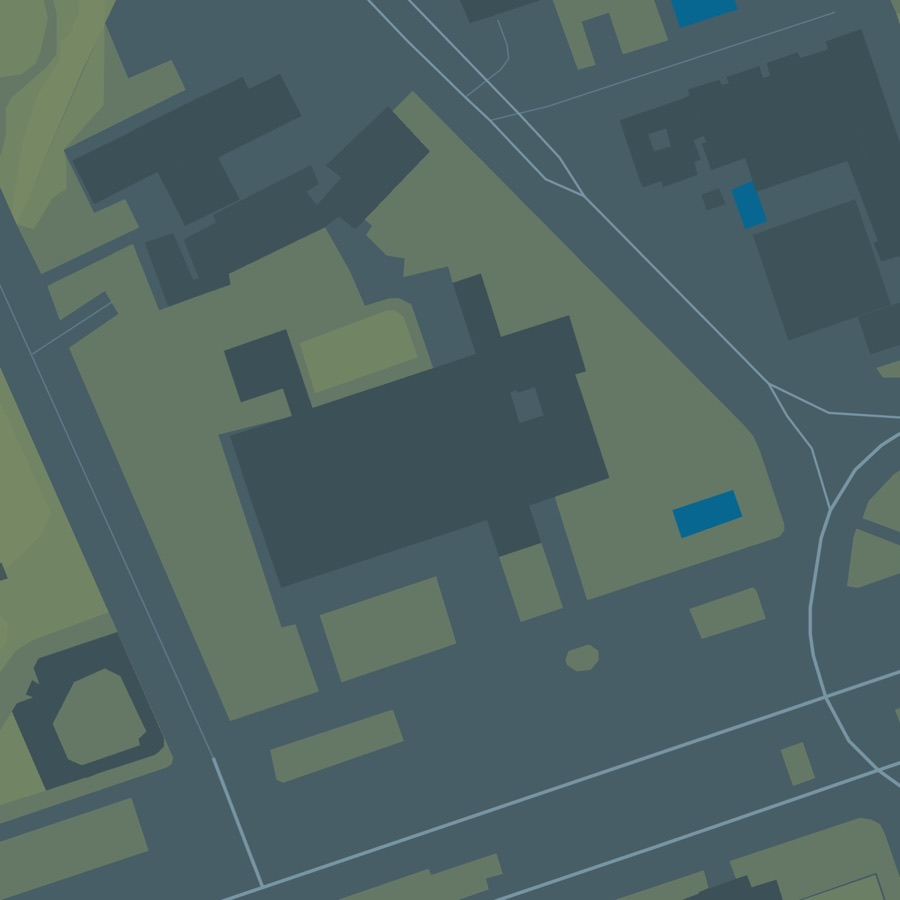

Los cuatro espacios renderizados cuadrados a 1600 px, en la misma paleta que el resto y con el mismo generador. Al lado, la ortofoto que sustituirían, al mismo tamaño.
La capa está en porcentajes de la ortofoto.
points para los polígonos del dojo y el parking,
label_at para sus etiquetas y at para cada puerta con
su letra. La ortofoto es un JPEG y no lleva sus coordenadas, así que en el
repositorio no hay nada que diga de qué son porcentajes esos números. Cambiar la
imagen de debajo mueve todas las puertas.
Por eso /acceso/ sigue mostrando las ortofotos. Publicar el mapa con los porcentajes actuales pondría las letras en puertas equivocadas, que es peor que una foto de satélite: esa página existe para llevar a alguien que ya va tarde a la entrada correcta. Dibuja encima del mapa y con esas marcas regenero la capa.
El único encuadre calibrado contra su ortofoto. El recinto deportivo queda centrado, la C-31 baja por la derecha y la trama de calles está arriba a la izquierda, igual que en la foto.


images/access-information-NdxqmVbV-aikido-musubi-plan-slate-lit.jpg
· 1600 × 1600
Centrado en las coordenadas del espacio, sin calibrar contra la ortofoto.


images/access-information-NdxqmVbV-sant-adria-de-besos-plan-slate-lit.jpg
· 1600 × 1600
Centrado en las coordenadas del espacio, sin calibrar contra la ortofoto.


images/access-information-NdxqmVbV-cxem-espronceda-plan-slate-lit.jpg
· 1600 × 1600
Centrado en las coordenadas que estaban en el mapa de _includes/map.html; _data/venues.yml no tiene lat/lng para este espacio.


images/access-information-NdxqmVbV-university-of-barcelona-plan-slate-lit.jpg
· 1600 × 1600